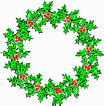

|  | ||
Weeds World Volume 3(iii) |
||
ISSN 1358-6912 |
||
| Editor: Mary Anderson, NASC, University of Nottingham, UK |
||
| WWW mirror site curator: David Flanders, Stanford AtDB Project |
||
| WWW mirror site curator: Doug Bigwood, Genome Informatics Group, NAL |
||
| Markup: Mike Arnold, NASC, University of Nottingham, UK | ||
| Comments to the editor | ||
 |
||
Mapping and Sequencing
Stock Centre News
Positions Available
Dates for your Diary
Next deadline for submission is 2nd April 1997
A help page is available to describe new features of the newsletter, and to provide for feedback if problems with the layout are encountered.